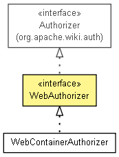

org.apache.wiki.auth.authorize
Interface WebAuthorizer
- All Superinterfaces:
- Authorizer
- All Known Implementing Classes:
- WebContainerAuthorizer
public interface WebAuthorizer
- extends Authorizer

Extends the Authorizer interface by
including a delgate method for
HttpServletRequest.isUserInRole(String).
|
Method Summary |
boolean |
isUserInRole(javax.servlet.http.HttpServletRequest request,
Principal role)
Determines whether a user associated with an HTTP request possesses
a particular role. |
isUserInRole
boolean isUserInRole(javax.servlet.http.HttpServletRequest request,
Principal role)
- Determines whether a user associated with an HTTP request possesses
a particular role. This method simply delegates to
HttpServletRequest.isUserInRole(String)
by converting the Principal's name to a String.
- Parameters:
request - the HTTP requestrole - the role to check
- Returns:
true if the user is considered to be in the role,
false otherwise
Copyright © {inceptionYear}-2014 The Apache Software Foundation. All rights reserved.